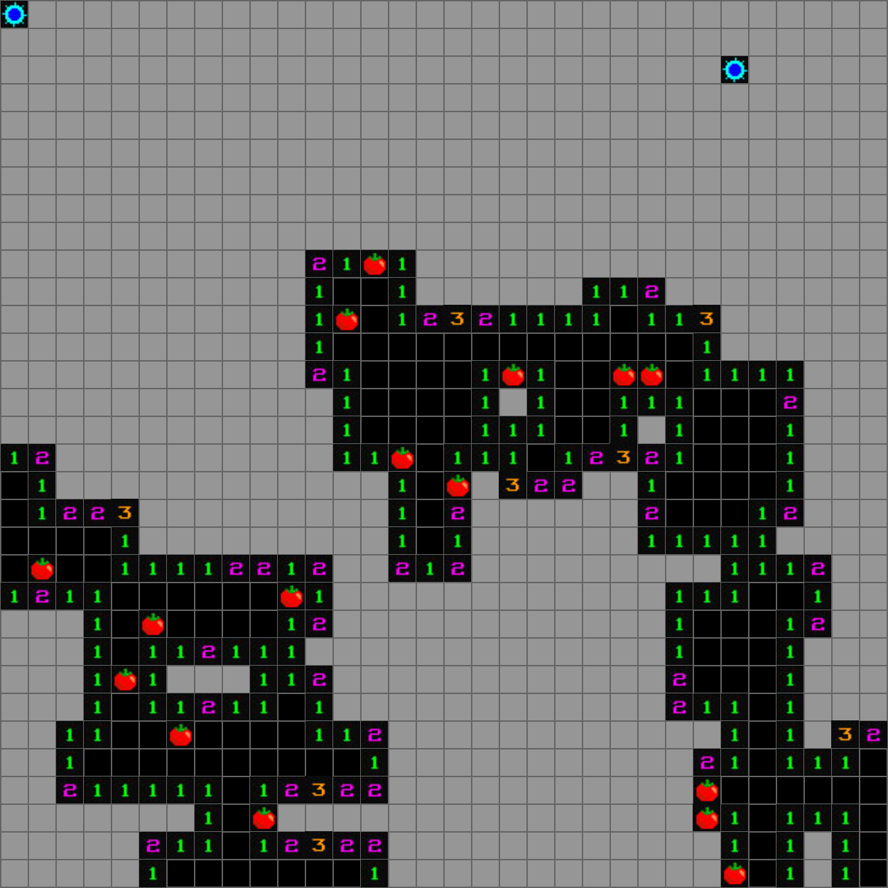
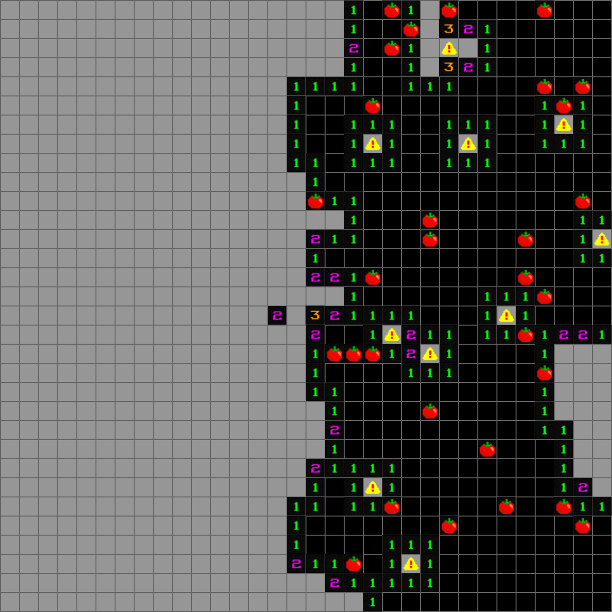
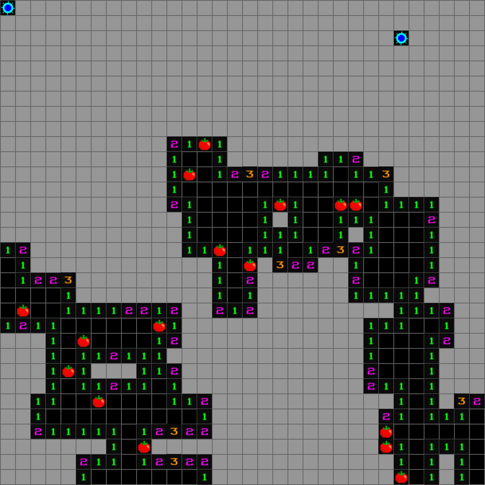
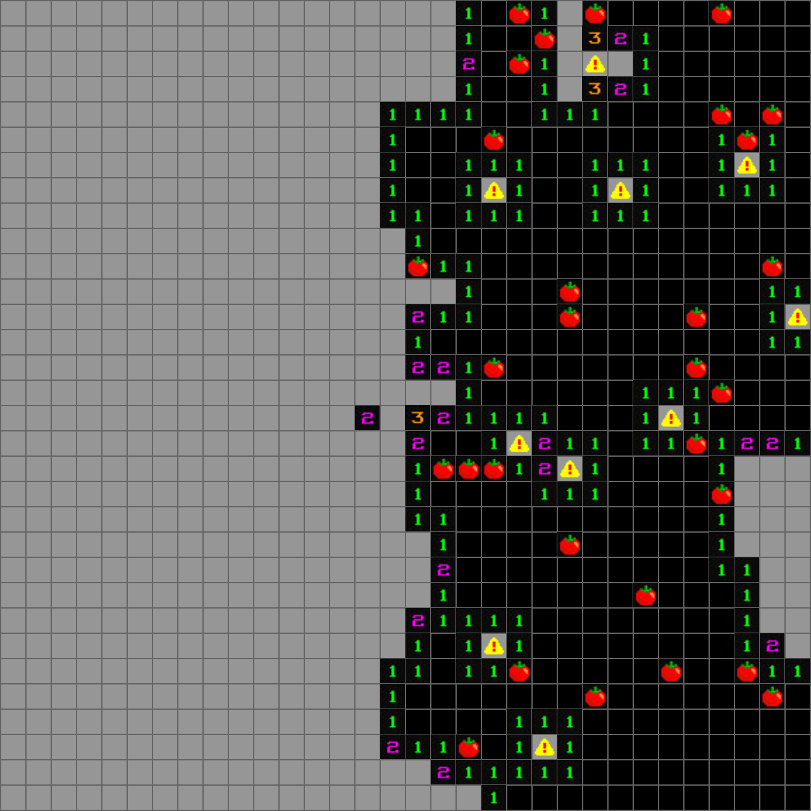

Q-sweeper stands for quantum minesweeper. The traditional game is redesigned by applying quantum concepts to it, such as noise and entanglement. The maps are generated using data from a quantum algorithm to place the mines in the game. Q-sweeper is a winner of the Special Mention in the IBM Quantum Jam 2021. This game was created in collaboration with Yiping Dong, Tanvi Mishra, Hyacinth Weng and Shangshang Li.
The game has two main features: entangled mines and interfering tomatoes. A percentage of the mines are pre-determined to be entangled mines. These mines are interconnected with 2 or 3 other mines. Opening one of these mines will reveal the other mines, but will not end the game. The number of tomatoes are dictated by a percentage of the q-bit data and are placed randomly across the board covering blank and numbered tiles making the game harder for the player.
 


